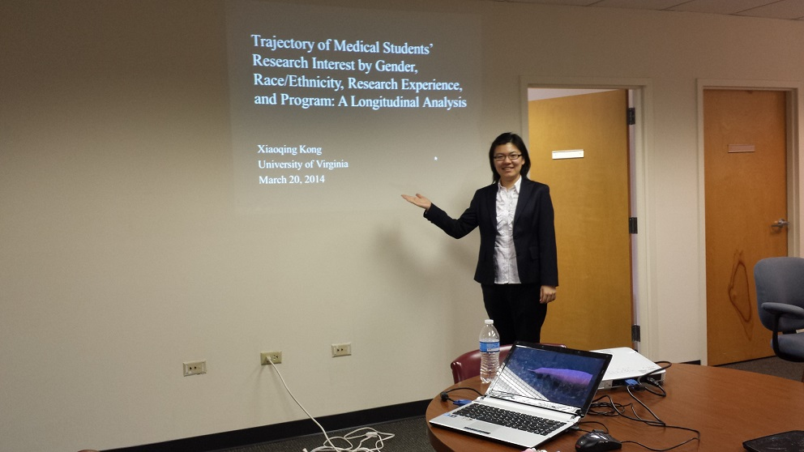

Xiaoqing Kong (孔晓晴)
I earned my PhD from Curry School of Education at the University of Virginia. I worked with my advisor, Dr. Robert H. Tai, on multiple grant-funded projects in science education by applying advanced quantitative and qualitative methods.
Since June of 2014, I have been working as a content analyst in the quantitative research group at Hanover Research, a consulting company head-quartered in Arlington, Virginia.
You can reach me at: firstname at virginia dot edu
Last updated: Apr 20, 2014